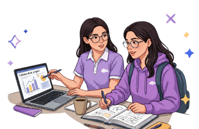

Marie Curie
FÍSICA Y QUÍMICA
Fue la primera mujer en ganar un Premio Nobel y la única persona en ganarlo en dos ciencias distintas.
Leer historia →HISTORIAS
Conoce a científicas, ingenieras y matemáticas que abrieron camino en STEM. Sus ideas cambiaron el mundo y todas empezaron igual que tú: con curiosidad.
Ver historiasElige un área para conocer a las mujeres que la transformaron.
FÍSICA Y QUÍMICA
Fue la primera mujer en ganar un Premio Nobel y la única persona en ganarlo en dos ciencias distintas.
Leer historia →CIENCIAS DE LA COMPUTACIÓN
Desarrolló el primer compilador, una herramienta que traduce las instrucciones que escribimos a código de máquina.
Historia próximamente
MATEMÁTICAS Y COMPUTACIÓN
Considerada la primera programadora de la historia por escribir el primer algoritmo pensado para una máquina.
Historia próximamente
INGENIERÍA Y ASTRONÁUTICA
Rompió las barreras de la gravedad al convertirse en la primera mujer afroamericana en viajar al espacio.
Historia próximamenteQUÍMICA FARMACÉUTICA
Combinó el método científico moderno con la medicina tradicional china para descubrir un tratamiento contra la malaria.
Historia próximamente
MATEMÁTICAS
Sus cálculos fueron fundamentales para las misiones de la NASA y para la llegada del Apolo 11 a la Luna.
Historia próximamenteINGENIERÍA DE REDES
Creó un protocolo que permite conectar redes de forma masiva y sentó bases para el funcionamiento de Internet.
Historia próximamenteQUÍMICA
Capturó la famosa «Fotografía 51», la imagen de rayos X que ayudó a revelar la estructura del ADN.
Historia próximamenteTodas ellas empezaron haciéndose preguntas. Descubre qué área STEM conecta contigo y da tu primer paso.
Descubre tu camino